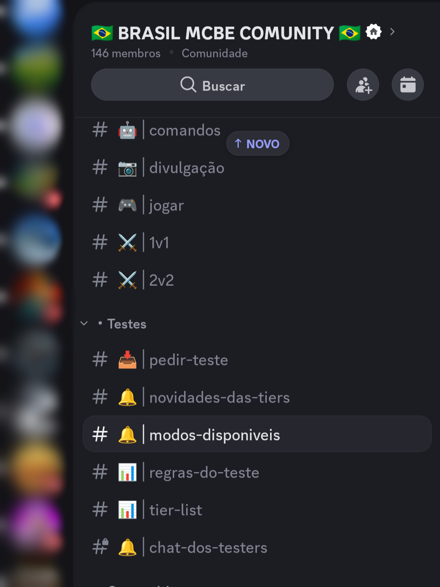

01
PRIMEIRO PASSO
Entre no Discord da BMC
O primeiro passo é entrar no servidor oficial da Brazil MCBE Community. É por lá que todo o processo de testes e comunicação com os testers acontece.
Entrar no Discord